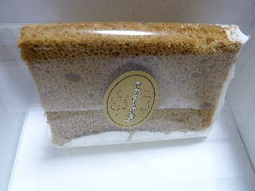
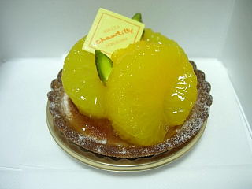
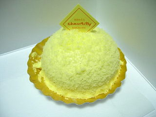
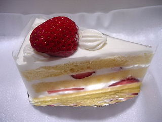

シャンティーのチョコレートシフォン
2011/04/11
チョコレート味のシフォンにクリームがついてました。

シフォンもチョコで甘いしクリームも甘いので、ロールケーキ風の味がするなって思いました。
島根県出雲市平田町1654-1
2011/04/11
チョコレート味のシフォンにクリームがついてました。

シフォンもチョコで甘いしクリームも甘いので、ロールケーキ風の味がするなって思いました。
2009/05/29
ちょっと甘い甘夏が乗ったタルトケーキです。

甘夏が美味しかったです。フルーツっていいですね。しかも量があっていいです。
タルトはちょっと厚みがあって、外はカリカリですが中はしっとりして甘かったです。甘夏と一緒に食べると、柑橘系の爽やかな風味がして美味しかったです。

こっちはフロマージュです。
バニラが効いたカスタードクリームがぎっしりと詰まってました。
2008/05/19
見た目、苺ショートらしい苺ショートですね。
スポンジの間にもちゃんと、大きめにカットした苺が入ってます。

爽やかな感じの苺と、ちょっと甘めのクリームが印象に残りました。
味も苺のケーキらしい味で、なんとなくクリスマスケーキを思い浮かべました。